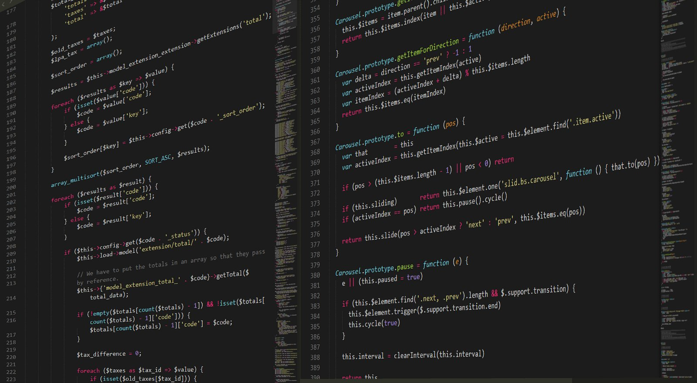

Quantitative development · Backtest audits · Execution systems
Most edges die in the cost column.
I am Dr Piotr Nowak. I build and audit trading systems for prop firms and trading companies — the backtests, execution engines and risk controls their strategies actually run on. The work starts with the costs, because that is where most strategies end.
Worksheet C-1 · The signature instrument
The cost drag calculator
Every engagement opens with this sheet. A strategy's gross edge is a claim; the cost column is arithmetic. Set a gross edge, a trade size and a pace of trading, and the sheet reconciles the claim against the printed cost model — line by line, the way the audit will.
The printed cost model — per completed trade
| Component | bps |
|---|---|
| Exchange & clearing fees (stated venue schedule, mid-tier) | 0.4 |
| Half-spread, both sides (liquid large-cap future, normal hours) | 1.1 |
| Slippage (modelled median adverse fill vs decision price) | 1.6 |
| Total cost per trade | 3.1 |
Basis points of trade notional, per round turn. Your venue, instrument and hours will move every line — the audit replaces these with your measured figures. The shape of the arithmetic does not change.
Your worked example
The reconciliation
- Trades per year40 × 250 = 10,000
- Gross per trade£11.25
- Gross per year£112,500
- Cost per trade (3.1 bps)£7.75
- Cost drag per year£77,500
- Costs consume
- Net per year£35,000
- Net per trade£3.50
- Breakeven edge3.1 bps
At 4.5 bps the claim clears its costs with £3.50 per trade to spare. The audit's job is to check whether the 4.5 was ever real.
Services register
What firms hire this practice to do
Register S — services, clients, status · scroll sideways on small screens
| Ref | Service | Client type | System | Status |
|---|---|---|---|---|
| S.01 | Backtest audit — point-in-time data review, look-ahead and survivorship hunt, walk-forward restatement | Prop firms, small funds | Research pipelines | Booking — Nov |
| S.02 | Execution systems build — order routing, fill capture, slippage measurement against the model | Trading companies | Execution engines | Booking — Nov |
| S.03 | Cost & slippage modelling — a TCA model your own fills are then reconciled against, monthly | Prop firms | Cost models | Booking — Dec |
| S.04 | Risk controls & reconciliation — kill switches, position limits, three-way daily reconciliation | Firms going live | Control layers | Booking — Nov |
| S.05 | Walk-forward validation programme — a standing out-of-sample protocol for a research team | Research teams | Validation protocols | Waitlist |

From the engagements file
File 01 — the audit that ended a strategy
A prop firm brought a two-year backtest showing 6.2 bps of gross edge per trade. The audit found the cause in the data pipeline, not the strategy: corporate fundamentals joined on the date the period ended, not the date the figures were published. The market cannot trade on numbers it has not seen yet — but the backtest had been doing exactly that, for two years.
Rebuilt on point-in-time data, the same strategy restated at 1.8 bps — under the firm's own 3.1 bps cost line. The firm shelved it before a pound of capital followed the chart. The audit fee was unchanged: the conclusion never moves the price. Read all three case files →
“Piotr's audit cost us a strategy we loved and saved us the capital we were about to put behind it. The restated sheet was brutal and completely fair — every line of it reconciled.”
— Head of Trading Technology, proprietary trading firm, London · attached to File 01, backtest audit
Fees — printed, not negotiated in the dark
The fee shape
| Line | Rate |
|---|---|
| Backtest audit day | £1,450 |
| Systems build day | £1,650 |
| Walk-forward validation day | £1,250 |
| Risk-controls review, fixed | £3,800 |
What moves the price: venue count first — every additional venue is its own fees, spread and fill behaviour to reconcile — then audit depth: years of data, number of strategies, state of the pipeline. Fixed-fee audits are available after a scoping call. A finding that kills your strategy costs exactly what a clean bill costs.
Engagement estimator
An indicative shape, from the printed rates — a quote follows a scoping call, never the other way round.
- Audit4 × £1,450 = £5,800
- Build6 × £1,650 = £9,900
- Risk review£3,800
Enquiries
Bring the backtest. Bring the cost column too.
Engagements begin with a scoping call and a look at your data pipeline — before any quote. If the sheet doesn't reconcile, you'll hear it from me first, in writing, with the lines shown.
Open an enquiry →